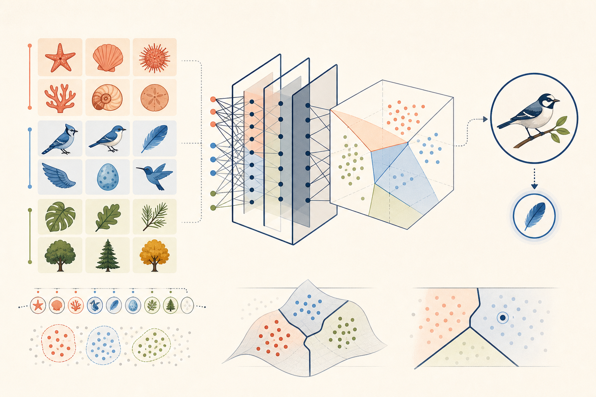
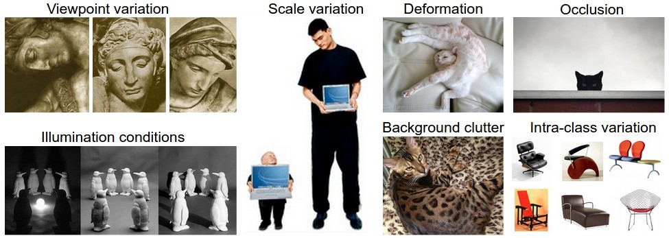
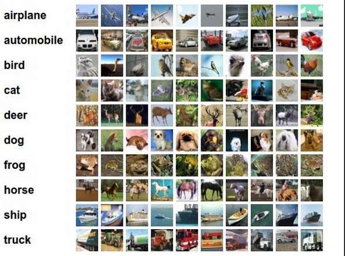
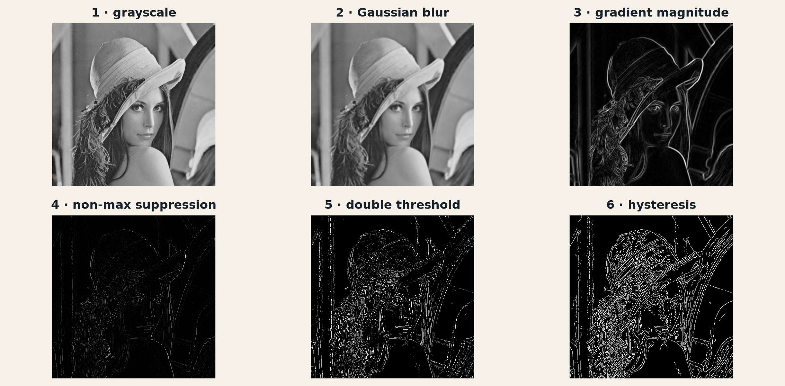
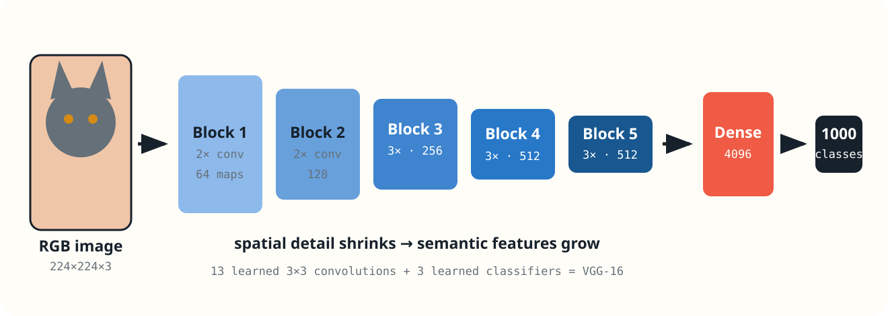
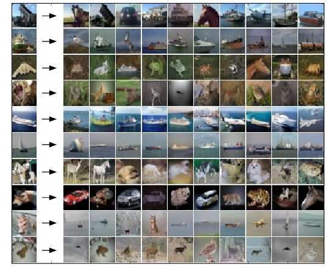
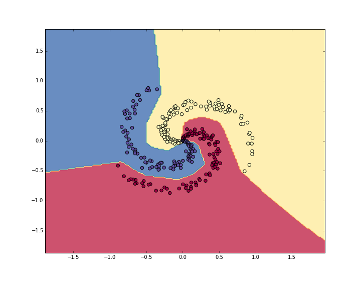
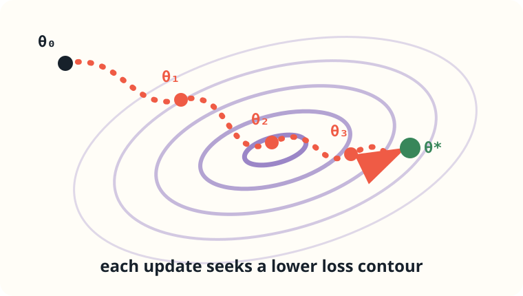

flowchart LR Q[define<br/>decision] --> A[audit<br/>data] A --> S[design<br/>split] S --> B[establish<br/>baseline] B --> T[train<br/>model] T --> V[choose with<br/>validation] V --> E[evaluate<br/>once] classDef start fill:#17212b,color:#fff,stroke:#17212b classDef process fill:#fffdf7,color:#17212b,stroke:#657079 classDef finish fill:#ef5b45,color:#fff,stroke:#ef5b45 class Q start class A,S,B,T,V process class E finish
What Does It Mean to Learn?
Chapter 1 · Foundations
From examples to a rule that works on data we have not seen
PART I · FOUNDATIONS

We will solve the same classification problem twice in this course: first with classical machine learning, then with deep learning. The tools will change; the five ingredients of learning will not.
By the end of this chapter, you should be able to
- Formulate image classification as a supervised-learning problem.
- Compare nearest-neighbor, linear, and neural-network hypothesis classes.
- Compute multiclass SVM and softmax cross-entropy losses from class scores.
- Separate the training objective from the metrics used to evaluate a classifier.
- Explain why training performance is not evidence of generalization.
1 One image, one label
Consider a tiny color image with width \(W\), height \(H\), and three color channels. To us it may be a cat. To a computer it begins as a tensor
\[ x \in \mathbb{R}^{H\times W\times 3}. \]
For a \(32\times32\) RGB image, \(x\) contains \(32\cdot32\cdot3=3072\) numbers. The classification task is to map those numbers to one label from a finite set:
\[ y \in \{1,\ldots,K\}. \]

01airplane02car03bird04cat05deer06dog07frog08horse09ship10truck
The label is simple. The rule is not. A cat may occupy five pixels or the whole image; face left or right; appear in sunlight or shadow; be partly hidden; and share colors and textures with a dog. Meanwhile, changing many pixel values can leave the class completely unchanged. These nuisance variations are central to visual recognition: the desired prediction should be insensitive to within-class changes while remaining sensitive to differences between classes (Deng et al. 2009).

Handwritten vision program
Pixels + rules about edges, colors, and shapes → class
We must anticipate every relevant variation.
Image classifier
Labeled images + learning algorithm → classifier
The data helps determine the rule.
This does not remove the programmer. We still define the labels, collect the images, choose the possible classifiers, define what errors cost, decide how to search, and design the evaluation. Learning replaces one difficult act—writing the final rule—with five explicit design problems. The history of ImageNet illustrates how dataset scale and label organization can reshape the kinds of visual systems researchers can build (Deng et al. 2009), while AlexNet demonstrated how a sufficiently expressive learned model could exploit that scale (Krizhevsky et al. 2012).
Image classification is a useful laboratory for machine learning. The input is concrete, mistakes are visible, and the same five-part formulation supports both a classical linear classifier and a modern deep network.
2 The five ingredients of learning
Let one example be a pair
\[ (x, y), \]
where \(x\) is an image and \(y\) is its class label.
A dataset of \(n\) examples is
\[ \mathcal{D} = \{(x^{(i)}, y^{(i)})\}_{i=1}^{n}. \]
The superscript \((i)\) identifies an example; it is not an exponent.
01Data
\(\mathcal{D}\) records past examples.
02Hypothesis
\(f_\theta\) maps an input to a prediction.
03Loss
\(\ell\) scores each mistake.
04Optimization
An algorithm searches for \(\theta\).
05Evaluation
Metrics test useful behavior.
2.1 Ingredient 1 — Data: what counts as experience?
For a \(K\)-class image problem, the training data is a collection
\[ \mathcal D = \{(x^{(i)},y^{(i)})\}_{i=1}^{n}, \qquad x^{(i)}\in\mathbb R^{H\times W\times3}, \quad y^{(i)}\in\{1,\ldots,K\}. \]
But “an image and its label” hides important choices.

SamplingWhich cameras, locations, objects, and conditions produced the images? LabelsWho decided the class, and what happens when the image is ambiguous? BalanceDo common classes dominate rare but important ones? RepresentationRaw pixels, resized pixels, or handcrafted features?
Classical computer vision often transforms the pixels into handcrafted features \(\phi(x)\)—color histograms, edges, or local descriptors—before learning a classifier. Canny edges (Canny 1986) and histograms of oriented gradients (Dalal and Triggs 2005) are canonical examples: the designer decides in advance which measurements should survive. Deep learning instead learns useful features together with the classifier, an idea usually called representation learning (Bengio et al. 2013).
Classical MLimage→handcrafted \(\phi(x)\)→classifier
Deep learningimage→learned features→classifier
A concrete classical representation: Canny edges
The Canny detector makes the idea of a handcrafted representation tangible. Starting from an image, it applies a sequence chosen by the algorithm designer:
- convert intensities to grayscale;
- suppress noise with a Gaussian filter;
- compute gradient magnitude and orientation;
- thin candidate edges with non-maximum suppression;
- distinguish strong and weak responses using two thresholds;
- retain weak responses only when hysteresis connects them to strong edges.

A classical pipeline might now train an SVM on this edge map. The Canny parameters and the decision to privilege edges are not learned from the classification labels—they are part of our representation design.
A learned representation: VGG-16
In a convolutional network, the transformation itself contains learned parameters. VGG-16 stacks small \(3\times3\) convolutions into five blocks; spatial resolution decreases while the number and abstraction of feature maps increase (Simonyan and Zisserman 2015). The final layers turn the learned representation into class scores.

The contrast is not “simple versus magical.” Both pipelines encode assumptions. In the classical case, many assumptions live in \(\phi\); in the deep case, the architecture specifies a family of representations and optimization selects one from data.
If every ship is photographed against blue water while cars appear on gray roads, “blue background” may become a highly predictive shortcut. The model can score well without learning the object we intended. Shortcut learning is not limited to deep networks, but expressive networks are particularly capable of exploiting any stable predictive cue in the training distribution (Geirhos et al. 2020).
2.2 Ingredient 2 — Hypothesis: what rules may the learner choose?
A hypothesis is a candidate prediction rule. A hypothesis class \(\mathcal H\) is the collection of rules the algorithm is allowed to choose from.
\[ f_\theta : \mathbb R^{H\times W\times3} \rightarrow \mathbb R^K. \]
The model produces one score for each class:
\[ s=f_\theta(x)=[s_1,\ldots,s_K]^\top, \qquad \widehat y=\arg\max_j s_j. \]
The largest score wins. Scores need not be probabilities; they are simply the model’s preferences before a loss interprets them.
MEMORY-BASED
\(k\)-nearest neighbors
Store the training images. Predict using the labels of visually nearby examples.
Strength: almost no training. Weakness: distance between raw pixels is fragile.
PARAMETRIC
Linear classifier
Compute class scores with \(s=Wx+b\).
Strength: fast and interpretable. Weakness: one linear template per class.
REPRESENTATION LEARNING
Neural network
Compose nonlinear layers and learn the features used by the classifier.
Strength: expressive. Weakness: more data, computation, and design choices.
These three choices differ in what they can express and in where they store information. Nearest neighbor retains examples and compares a query at prediction time (Cover and Hart 1967). A linear classifier compresses training information into one weight vector per class. A neural network composes linear maps with nonlinearities and can learn intermediate features (Rumelhart et al. 1986; Bengio et al. 2013).
| \(k\)-nearest neighbors | Linear classifier | Neural network |
|---|---|---|
 |
 |
 |
The nearest-neighbor and linear illustrations come from the Stanford CS231n notes; the neural boundary comes from its minimal neural-network case study (Li et al., n.d.). The point is not that the most complex hypothesis always wins. The point is that choosing \(\mathcal H\) decides which regularities can possibly be learned.
The linear classifier in detail
Flatten the image into a vector \(x\in\mathbb R^D\), where \(D=H\times W\times3\). A multiclass linear classifier uses
\[ s=Wx+b, \qquad W\in\mathbb R^{K\times D}, \quad b\in\mathbb R^K. \]
Row \(W_j\) acts like a learned template for class \(j\). Its score is
\[ s_j=W_jx+b_j. \]
The geometry is visible even after projecting images into two dimensions: each row of \(W\) defines a linear score surface, and class boundaries occur where two scores are equal. A single linear classifier therefore cannot carve arbitrary disconnected regions. Neural networks overcome this restriction by composing several learned transformations, not by changing the definition of a class score.
one image\(x\in\mathbb R^{3072}\)
×
class templates\(W\in\mathbb R^{10\times3072}\)
+
bias\(b\in\mathbb R^{10}\)
→
10 scores\(s\in\mathbb R^{10}\)
Check your understanding
Two students train the same linear-classifier code but obtain different matrices \(W\). Did they choose different hypothesis classes or different hypotheses?
Reveal the answer
They use the same hypothesis class but learned different hypotheses—different members of that class.2.3 Ingredient 3 — Loss: how wrong is a score vector?
A hard error—right or wrong—is useful for reporting accuracy but poor for learning. It does not distinguish “barely wrong” from “confidently wrong,” and small parameter changes usually do not change it. A training loss provides a graded signal.
We will compare two iconic multiclass losses using the same example. Suppose the scores for an image are
\[ s=[3.2,\ 5.1,\ -1.7], \qquad y=1. \]
Class 1 is correct, but class 2 has the largest score. How should we express this mistake?
Multiclass SVM loss: demand a margin
The SVM family formalizes classification through separating surfaces and margins (Cortes and Vapnik 1995). In the multiclass form used here, the loss requires the correct score \(s_y\) to exceed every incorrect score by at least a margin \(\Delta\):
\[ L_i^{\text{SVM}} =\sum_{j\ne y}\max\left(0,\ s_j-s_y+\Delta\right). \]
Practice before reading the solution
For \(s=[3.2,5.1,-1.7]\), correct class \(y=1\), and \(\Delta=1\), write one hinge term for each incorrect class and compute their sum. Pause for 90 seconds.
Reveal the worked solution
\[ L_i^{\text{SVM}} =\max(0,5.1-3.2+1) +\max(0,-1.7-3.2+1) =2.9. \]
The dog score contributes \(2.9\) because it exceeds the correct score instead of trailing by one. The third class contributes zero because it is already safely below the required margin.The loss becomes zero only when the correct class wins by a sufficient margin. Once that margin is satisfied, pushing the score farther gives no additional reward.
Softmax cross-entropy: demand probability
Softmax converts scores into a normalized positive vector that can be interpreted as a class distribution for the loss:
\[ p_j=\frac{e^{s_j}}{\sum_{k=1}^{K}e^{s_k}}. \]
For numerical stability, implementations subtract \(\max_k s_k\) before exponentiating. This changes none of the probabilities. For our scores,
\[ p\approx[0.130,\ 0.869,\ 0.001]. \]
Cross-entropy is the negative log-probability of the correct class:
\[ L_i^{\text{CE}}=-\log p_y\approx-\log(0.130)=2.04. \]
The logarithm makes confident errors expensive: assigning \(p_y=0.9\) costs about \(0.11\), while \(p_y=0.01\) costs about \(4.61\). The resulting softmax values should not automatically be treated as trustworthy real-world probabilities; modern networks can be systematically miscalibrated even when their accuracy is high (Guo et al. 2017).
SVM · margin view
“Is the correct score ahead of every rival by enough?”
Zero loss after the margin is satisfied.
Softmax · probability view
“How much probability did the model assign to the correct class?”
Continues rewarding greater confidence.
Both losses prefer the correct class. They differ in the geometry of the pressure they apply to scores. Modern classification networks most often use softmax cross-entropy, but the SVM loss makes the idea of a classification margin especially visible.
Over the complete dataset, we minimize the empirical risk, often with a regularization penalty:
\[ J(\theta) =\frac1n\sum_{i=1}^{n}L_i(\theta) +\lambda R(\theta). \]
The data loss rewards correct predictions. The regularizer expresses a preference among solutions—for example, smaller weights.
Loss is not the same as the final metric. We choose a differentiable loss to train the model and use application-relevant metrics to judge the resulting behavior.
2.4 Ingredient 4 — Optimization: how do scores improve?
The loss converts learning into a search problem. We start with some parameters, measure the loss, estimate how each parameter should change, and update the parameters. Mini-batch training belongs to the broad stochastic-approximation tradition initiated by Robbins and Monro (Robbins and Monro 1951); backpropagation supplies gradients efficiently for layered networks (Rumelhart et al. 1986). Schematically:
sample data→predict→measure loss→compute change→update \(\theta\)
For a linear classifier, optimization changes the class templates \(W\) and biases \(b\). For a neural network, it may change millions of weights. In either case, one gradient-based step has the form
\[ \theta\leftarrow\theta-\eta\nabla_\theta J(\theta), \]
where \(\eta\) is the learning rate. Later chapters will explain why this direction is useful, how backpropagation computes the gradient, and why the choice of optimizer matters. For now, keep the conceptual distinction clear:

The loss defines where we want to go. The optimizer is the procedure used to move there.
2.5 Ingredient 5 — Evaluation: did we solve the task?
Training loss answers a narrow question:
How well does this model fit the examples used to adjust its parameters?
The question we actually care about is broader:
How well will this model perform on a new example drawn from the situation where it will be used?
The gap between those questions is the central difficulty of machine learning. Evaluation needs both held-out data and metrics that expose the mistakes we care about.
AccuracyHow often is the top prediction correct? Top-\(k\) accuracyIs the correct label among the \(k\) highest scores? Confusion matrixWhich classes are confused with which? Per-class recallWhich classes does the model systematically miss?
For a balanced ten-class benchmark, accuracy is a useful headline. It is not a complete diagnosis. A confusion matrix might reveal that cats are repeatedly classified as dogs, while trucks are nearly perfect. Looking at erroneous images may reveal blur, occlusion, unusual viewpoints—or a faulty label.
3 Fitting is not learning
Suppose we give a model the labels of 1,000 training images. A sufficiently expressive model might memorize every image-label pair. It could achieve zero training error while having learned nothing useful about new images.
Memorization
Training examples → stored answers
Seen data: excellent New data: uncertain
Generalization
Training examples → reusable structure
Seen data: good New data: good
The distinction becomes clearer with numbers. Imagine that two candidate models are evaluated on the same representative held-out set:
| Model | Training accuracy | Test accuracy | Interpretation |
|---|---|---|---|
| A · memorizer | 99% | 54% | Excellent fit, large generalization gap |
| B · generalizer | 92% | 89% | Slightly worse fit, much stronger unseen behavior |
If deployment resembles the test distribution, Model B is the stronger learning result. Choosing Model A because its training number is larger would confuse optimization success with task success. This example also shows why a single statement such as “the model achieved 99%” is meaningless unless the dataset split is named.
We say a model generalizes when it performs well on relevant examples that were not used to fit it.
The ideal quantity is the expected risk over the unknown data-generating distribution \(P\):
\[ R(\theta) = \mathbb{E}_{(x,y)\sim P} \left[\ell\big(f_\theta(x),y\big)\right]. \]
We cannot calculate this expectation exactly because \(P\) is unknown. We estimate performance using held-out data that imitates future use. This empirical-risk view is a central organizing idea in statistical learning and modern deep-learning treatments (Goodfellow et al. 2016).
Low training loss is an optimization result. Low loss on genuinely unseen, representative data is evidence of learning.
4 Train, validation, and test are different jobs
A useful experimental protocol divides available data into three disjoint subsets.
TRAINFit parameters
Used repeatedly by the optimizer.
VALIDATIONMake design choices
Used to compare models and settings.
TESTEstimate final performance
Used after decisions are complete.
4.1 The training set
The optimizer uses training examples to update \(\theta\). Seeing this data many times is expected.
4.2 The validation set
The validation set guides decisions that are not learned directly by the optimizer: architecture size, regularization strength, learning rate, preprocessing, and when to stop training. These choices are called hyperparameters.
Because we repeatedly inspect validation results, we gradually adapt to the validation set. It is not a perfectly unbiased final evaluation.
4.3 The test set
The test set is reserved for the end. It estimates how the completed procedure may behave on new data. If we repeatedly use test results to redesign the model, the test set quietly becomes another validation set.
Data leakage occurs when information unavailable at prediction time influences training or model selection. Leakage makes evaluation look better than real deployment (Kaufman et al. 2012).
4.4 Split by the unit that must generalize
Randomly splitting individual rows is not always valid. Imagine ten photographs of each physical object. If photographs of the same object appear in both training and test sets, the model may recognize that object rather than learn its class.
The split should follow the unit of independence required by the application:
- split by patient, not medical image;
- split by speaker, not audio clip;
- split by object or scene, not photograph;
- split by time when predicting the future;
- sometimes split by location when deploying elsewhere.
Design checkpoint
A company wants to predict machine failure next month using five years of sensor logs. Why might a random row-level split be misleading?
Reveal the answer
Training could contain observations recorded after validation or test observations, leaking future operating conditions into the past. A chronological split better represents forecasting.5 Classical machine learning and deep learning
We will revisit image classification later with convolutional neural networks. It is important to see what changes and what remains invariant.
CLASSICAL PIPELINE
Engineer, then learn
- Resize and normalize the image.
- Design features such as color or edge histograms.
- Train an SVM or linear classifier.
- Evaluate on held-out images.
The representation \(\phi(x)\) is largely designed by a human.
DEEP-LEARNING PIPELINE
Learn the representation
- Resize and normalize the image.
- Pass pixels through several learned layers.
- Produce class scores and optimize end-to-end.
- Evaluate on held-out images.
The representation is learned jointly with the classifier.
The deep model is not a different definition of learning. It is a richer hypothesis class with many more parameters and a learned feature extractor. We still need data, a loss, optimization, and honest evaluation.
6 Parameters are learned; hyperparameters are chosen
| Learned parameters | Chosen hyperparameters |
|---|---|
| Weights and biases | Network depth and width |
| Updated using training data | Learning rate |
| Part of the fitted prediction rule | Batch size |
| Often millions or billions | Regularization strength |
| Denoted here by \(\theta\) | Selected using validation evidence |
The boundary is conceptual, not universal. A quantity is a parameter if the learning procedure adjusts it from training data; it is a hyperparameter if it is controlled by the practitioner or an outer selection process.
7 Baselines make improvement meaningful
A score has no meaning without comparison. On a balanced ten-class dataset, random guessing averages 10% accuracy. On an imbalanced dataset, always predicting the largest class can score surprisingly well while ignoring every rare class.
Before building a complex model, establish simple baselines:
- majority-class prediction;
- random prediction with the observed class frequencies;
- \(1\)-nearest neighbor on raw pixels;
- a linear classifier on pixels or handcrafted features;
- the previous production system, if one exists;
- human performance, when it can be measured responsibly.
A baseline tests whether the pipeline and metric behave sensibly. It also tells us whether complexity buys anything.
8 Read the errors, not only the score
Suppose two classifiers both achieve 72% accuracy. They may still behave very differently.
MODEL A
Good on vehicles, weak on animals. Often confuses cats with dogs and deer with horses.
MODEL B
Moderate on every class. Most failures occur on dark, cropped, or blurry images.
A confusion matrix \(C\in\mathbb N^{K\times K}\) records how often true class \(i\) is predicted as class \(j\). Its diagonal contains correct decisions; off-diagonal cells expose systematic confusions.
For class \(k\), we can also treat “class \(k\)” as positive and all other classes as negative:
\[ \operatorname{precision}_k=\frac{TP_k}{TP_k+FP_k}, \qquad \operatorname{recall}_k=\frac{TP_k}{TP_k+FN_k}. \]
The most informative evaluation combines aggregate metrics, per-class metrics, and a gallery of representative mistakes. Numbers tell us how much the system fails; examples help us ask why.
9 The complete learning protocol
1Define the decision
State the input, output, user, and cost of mistakes.
2Audit the data
Understand collection, labels, missing cases, and possible shortcuts.
3Choose the split
Protect the unit—person, plant, time, or location—that must generalize.
4Establish baselines
Make sure the task and metric demand real learning.
5Fit on training data
Use the optimizer to adjust model parameters.
6Decide with validation data
Compare designs without touching the test set.
7Evaluate once
Report test performance and important failure modes.
This is not merely a classroom ritual. It is the smallest credible argument that a learned system may work outside its training file.
10 What can still go wrong?
Even a clean experimental split cannot guarantee success after deployment.
Distribution shift. The future may differ from the dataset: another camera, region, season, population, or policy. A random split from one dataset cannot by itself certify behavior under such changes.
Shortcut learning. The model may exploit a predictive artifact that does not represent the intended phenomenon (Geirhos et al. 2020).
Label limitations. Targets may be noisy, subjective, delayed, or encode historical bias.
Metric mismatch. A numerical score may ignore the real cost borne by users.
Feedback loops. Once deployed, model decisions can change the data later collected.
A model does not “understand the task” in the human sense. It discovers statistical structure that helps optimize the objective on the data it receives. Whether that structure is useful, robust, and acceptable remains an empirical and human question.
11 Reading and practice
The purpose of these resources is not to repeat the chapter. Each one adds a different perspective: a formal reference, a practitioner’s argument, a visual explanation, or an opportunity to make a decision yourself.
11.1 Image Classification: Data-driven Approach
Stanford CS231n course notes
Read through the nearest-neighbor classifier and validation-set discussion. Focus on why raw-pixel distance is a weak visual similarity measure and how the train/validation/test protocol shapes model selection.
11.2 Machine Learning Basics
Deep Learning, Chapter 5 · Ian Goodfellow, Yoshua Bengio, and Aaron Courville
Read Sections 5.1–5.3 for a more formal treatment of learning algorithms, capacity, overfitting, hyperparameters, and estimators. Concentrate on the concepts; detailed derivations can wait.
11.3 A Few Useful Things to Know About Machine Learning
Pedro Domingos · Communications of the ACM, 2012
A compact practitioner’s essay about generalization, representation, overfitting, data, and the traps hidden inside apparently successful experiments. After reading, select one claim you disagree with or would qualify.
11.4 But what is a neural network?
3Blue1Brown · Neural Networks, Chapter 1
A visual preview of the model family we begin constructing next week. Watch for the distinction between the architecture we choose and the parameters learned from examples.
11.5 Accuracy, precision, and recall
Google Machine Learning Crash Course
Work through the classification-metric checks. Before revealing each answer, decide which error matters and compute the quantity by hand.
Bring one thought to class
Choose one resource and write down either a claim that changed your view, a claim you question, or an example where the evaluation protocol could fail. We will begin the next discussion from these observations.
12 Chapter summary
- Image classification maps a tensor of pixel values to one of \(K\) labels and is a concrete supervised-learning problem.
- Nearest-neighbor, linear, and neural models define increasingly expressive hypothesis classes.
- SVM loss demands a score margin; softmax cross-entropy rewards probability assigned to the correct class.
- A differentiable loss trains the model; accuracy, confusion matrices, and per-class metrics evaluate its behavior.
- Fitting the training data is not the goal. The goal is useful performance on relevant unseen data.
- Training data fits parameters, validation data guides design, and test data supports final evaluation.
- Deep learning learns the representation jointly with the classifier, but the five ingredients do not change.
13 Exercises
13.1 Conceptual
- A model obtains 100% training accuracy and 62% test accuracy. Give three distinct explanations for the gap.
- Explain why selecting the best of 200 models using test accuracy makes that accuracy optimistic.
- Explain why Euclidean distance between raw image pixels can change dramatically after translating an object by one pixel.
- Two image classifiers have equal accuracy. List three analyses that could still make one preferable.
13.2 Design
- Choose one image-classification application—plant disease, traffic signs, waste sorting, or medical imaging—and write a one-page learning specification containing:
- input and target;
- data-collection process;
- unit of splitting;
- baseline;
- primary metric;
- two possible sources of leakage;
- one likely distribution shift.
13.3 Mathematical
- A three-class model produces \(s=[-1.2,2.4,1.7]\) and the correct class is 3. Compute the multiclass SVM loss using \(\Delta=1\).
- For the same scores, compute the softmax probabilities and cross-entropy loss. Use the stable form obtained by first subtracting the largest score.
- An image classifier produces \(TP=36\), \(TN=50\), \(FP=10\), and \(FN=4\) for the class “pedestrian.” Compute accuracy, precision, and recall. Which number best communicates its ability to find pedestrians?
References
References
Bengio, Yoshua, Aaron Courville, and Pascal Vincent. 2013. “Representation Learning: A Review and New Perspectives.” IEEE Transactions on Pattern Analysis and Machine Intelligence 35 (8): 1798–828. https://doi.org/10.1109/TPAMI.2013.50.
Canny, John. 1986. “A Computational Approach to Edge Detection.” IEEE Transactions on Pattern Analysis and Machine Intelligence PAMI-8 (6): 679–98. https://doi.org/10.1109/TPAMI.1986.4767851.
Cortes, Corinna, and Vladimir Vapnik. 1995. “Support-Vector Networks.” Machine Learning 20: 273–97. https://doi.org/10.1007/BF00994018.
Cover, Thomas M., and Peter E. Hart. 1967. “Nearest Neighbor Pattern Classification.” IEEE Transactions on Information Theory 13 (1): 21–27. https://doi.org/10.1109/TIT.1967.1053964.
Dalal, Navneet, and Bill Triggs. 2005. “Histograms of Oriented Gradients for Human Detection.” IEEE Computer Society Conference on Computer Vision and Pattern Recognition 1: 886–93. https://doi.org/10.1109/CVPR.2005.177.
Deng, Jia, Wei Dong, Richard Socher, Li-Jia Li, Kai Li, and Li Fei-Fei. 2009. “ImageNet: A Large-Scale Hierarchical Image Database.” IEEE Conference on Computer Vision and Pattern Recognition, 248–55. https://doi.org/10.1109/CVPR.2009.5206848.
Geirhos, Robert, Jørn-Henrik Jacobsen, Claudio Michaelis, et al. 2020. “Shortcut Learning in Deep Neural Networks.” Nature Machine Intelligence 2: 665–73. https://doi.org/10.1038/s42256-020-00257-z.
Goodfellow, Ian, Yoshua Bengio, and Aaron Courville. 2016. Deep Learning. MIT Press. https://www.deeplearningbook.org/.
Guo, Chuan, Geoff Pleiss, Yu Sun, and Kilian Q. Weinberger. 2017. “On Calibration of Modern Neural Networks.” Proceedings of the 34th International Conference on Machine Learning 70: 1321–30. https://proceedings.mlr.press/v70/guo17a.html.
Kaufman, Shachar, Saharon Rosset, Claudia Perlich, and Ori Stitelman. 2012. “Leakage in Data Mining: Formulation, Detection, and Avoidance.” ACM Transactions on Knowledge Discovery from Data 6 (4): 15:1–21. https://doi.org/10.1145/2382577.2382579.
Krizhevsky, Alex. 2009. Learning Multiple Layers of Features from Tiny Images. University of Toronto. https://www.cs.toronto.edu/~kriz/learning-features-2009-TR.pdf.
Krizhevsky, Alex, Ilya Sutskever, and Geoffrey E. Hinton. 2012. “ImageNet Classification with Deep Convolutional Neural Networks.” Advances in Neural Information Processing Systems 25. https://papers.nips.cc/paper/4824-imagenet-classification-with-deep-convolutional-neural-networks.
Li, Fei-Fei, Andrej Karpathy, and Justin Johnson. n.d. CS231n: Deep Learning for Computer Vision—Course Notes. https://cs231n.github.io/.
Robbins, Herbert, and Sutton Monro. 1951. “A Stochastic Approximation Method.” The Annals of Mathematical Statistics 22 (3): 400–407. https://doi.org/10.1214/aoms/1177729586.
Rumelhart, David E., Geoffrey E. Hinton, and Ronald J. Williams. 1986. “Learning Representations by Back-Propagating Errors.” Nature 323: 533–36. https://doi.org/10.1038/323533a0.
Simonyan, Karen, and Andrew Zisserman. 2015. “Very Deep Convolutional Networks for Large-Scale Image Recognition.” International Conference on Learning Representations. https://arxiv.org/abs/1409.1556.